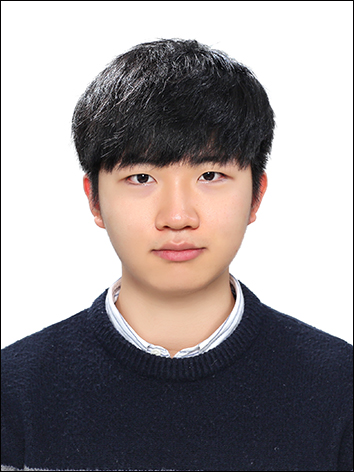

Shin Taeho's Page...

Profile
- 1999.12.14 출생
- 탄약지원사령부 7탄약창 일반행정병 병장 만기 전역
- 학력 : 광운대학교 정보융합학부 2학년 재학
- 관심 분야 : 데이터 사이언스, 추천 알고리즘
- 사용 언어 : Python, C, Java
- e-mail : odsyjr3@naver.com
- SNS : 페이스북, 인스타그램
수강 예정 과목
- 3학년 1학기 : 기계학습, 데이터마이닝, IoT프로그래밍, 실험설계 및 분석
- 3학년 2학기 : 소셜 네트워크 분석, 데이터 애널리틱스, 빅데이터처리 및 응용, IoT 시스템 설계
- 4학년 1학기 : 텍스트마이닝, 인터렉티브AI, 데이터시각화
- 4학년 2학기 : 인공지능운용, ICT융합전략
향후 계획
- 2021년 겨울 : 국가공인 데이터분석 준전문가(adsp) 취득
- 2022년 여름 : 데이터 사이언스 고급 방법론 학습
- 2022년 겨울 : 데이터 분석 공모전 준비
- 2023년 : 개인 포트폴리오 및 졸업 준비